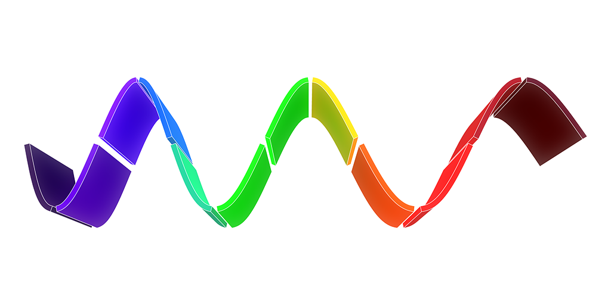

A New Logo and Website!
We are pleased to share with you our new logo and website!
The new logo, less abstract than the previous, represents the light and its wave-particle duality:
The website is now powered by Nikola, a brilliant static site generator.
It makes blogging with Jupyter Notebooks a breeze. We also now have a proper dedicated blog section.
Colour 0.3.7 is around the corner. This is a maintenance release providing API support for the soon to be deployed Colour - Demosaicing and Colour - HDRI repositories. When they are officially released we will focus back on Colour itself as the next big step is the spectral code refactoring we started back in September.
Finally we have a work in progress toy project based on Vispy: Colour - Analysis
It provides various image and RGB colourspace analysis features. A nasty issue on Vispy side currently prevent us to release it but we keep an eye on it!

Comments
Comments powered by Disqus